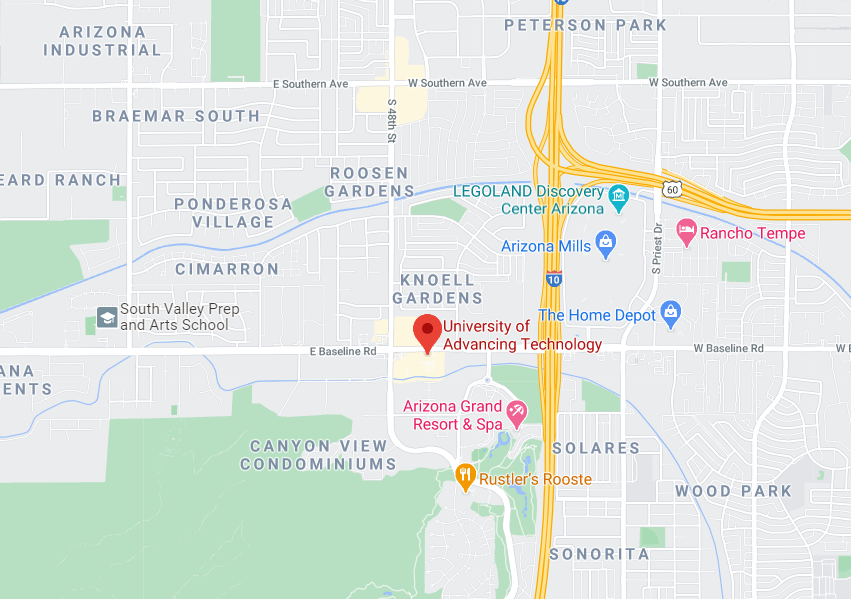

The University of Advancing Technology is the technophile's college experience—a community uniquely suited to provide students passionate about technology an ideal place to live and grow. UAT is a private and family-owned University that merges the values of the traditional academy with the modern technology campus, a fusion that enhances our ability to fulfill the mission of educating students in the fields of advancing technology who innovate for our future.
Learning at UAT extends from our students, staff and faculty to the institution itself. UAT's dedication to learning is reflected in our efforts to create and develop new ways of learning that focus on the personal mission and vision of every member of the UAT community.
UAT strives to foster knowledge creation and achieve academic excellence. We are at the forefront of developing academic programs that tend to be unique among academia or emerge years ahead of other schools, such as Network Security and Robotics and Embedded Systems, as well as our established Game Development majors that merged artistic and programming aspects long before other colleges chose that focus for themselves.
At the heart of UAT's curricula is a technology-infused campus in Tempe, Arizona. This fusion of the traditional academy with the technology-focused curricula creates a distinct, non-exclusionary university in which students learn to value their own uniqueness and the power of technology in education.
tester 123
